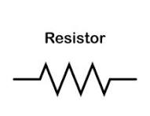

resistores

que es un resistor?
Un resistor es un componente electrónico que se opone al flujo de la corriente eléctrica en un circuito. Su función es controlar o limitar la cantidad de corriente y distribuir el voltaje. Al hacerlo, convierte el exceso de energía eléctrica en calor, aprovechando el efecto Joule.
tipos de resistores?
Existen varios tipos de resistencias, pero las principales clasificaciones son: resistencias fijas (cuyo valor no cambia), resistencias variables (que pueden ajustarse, como los potenciómetros) y resistencias no lineales (cuyo valor cambia de forma no lineal con factores como la temperatura o la luz). Además, hay resistencias que se distinguen por su diseño, como las de película metálica, las de alambre bobinado y las de potencia.
leyes por la cual se rigen?
La Ley de Ohm
La Ley de Ohm es la ley más fundamental que describe el comportamiento de un resistor ideal (llamado resistor lineal). Esta ley establece la relación entre la tensión (V o E), la corriente (I) y la resistencia (R).
Las Leyes de Kirchhoff
Cuando los resistores se agrupan en circuitos más complejos, se aplican las Leyes de Kirchhoff para analizar el flujo de corriente y las caídas de voltaje en todo el circuito.
La Ley de Joule (Efecto Joule)
Aunque no rige la resistencia en sí misma, esta ley es crucial para entender el comportamiento de los resistores en términos de energía. Establece que cuando la corriente eléctrica pasa a través de un resistor, se disipa energía en forma de calor.
juas juas.
capacitores

que es un capacitor?
componente electrónico pasivo que almacena energía eléctrica en un campo eléctrico, actuando de manera similar a una batería pero capaz de cargar y descargar su energía mucho más rápido. Su estructura básica consiste en dos placas conductoras separadas por un material aislante llamado dieléctrico.
Tipo de capacitores?
Los tipos de capacitores se clasifican principalmente por su material dieléctrico (cerámicos, electrolíticos, de película, de mica, de tantalio) y por su polaridad (polarizados y no polarizados). También existen otros tipos como los super capacitores y los capacitores variables, utilizados en aplicaciones específicas.
Leyes por la cual se rigen?
Los capacitores se rigen principalmente por las leyes de Kirchhoff (ley de corriente y ley de voltaje) para el análisis de circuitos. Además, el comportamiento fundamental de un capacitor se describe por la ecuación de capacitancia (\(C=Q/V\)), la cual relaciona la carga que puede almacenar con el voltaje aplicado. La Ley de Gauss también es fundamental, ya que explica la relación entre el campo eléctrico y la carga almacenada en el capacitor.
Ley de Gauss
Establece que el flujo eléctrico a través de cualquier superficie cerrada es proporcional a la carga total encerrada por esa superficie. Esta ley es fundamental para derivar las relaciones de la capacitancia y el campo eléctrico en un capacitor.
inductores

Qué son los inductores?
Un inductor es un componente pasivo que almacena energía en forma de campo magnético cuando circula corriente.
La inductancia (L) mide su capacidad para oponerse a cambios de corriente y se expresa en henrios (H).
La inductancia depende del número de vueltas de la bobina, de las dimensiones físicas (área, longitud) y de la permeabilidad del núcleo si existe uno
Tipos de inductores?
Los tipos de inductores se clasifican principalmente según su núcleo (aire, hierro, ferrita), construcción (fijos, variables, blindados, multicapa) y montaje (de inserción, de montaje superficial). Cada tipo tiene características y aplicaciones específicas, como los inductores de núcleo de aire que se usan en alta frecuencia y los inductores de núcleo de hierro que son adecuados para potencias mas
alevadas.
leyes por la cual se rigen?
Ley de Faraday: Esta ley establece que un campo magnético cambiante en el tiempo induce una fuerza electromotriz (FEM, o voltaje) en un conductor. En un inductor, cuando la corriente eléctrica varía, el campo magnético que produce también varía, induciendo un voltaje en la bobina misma que se opone al cambio de corriente (autoinducción).
Ley de Lenz: Esta ley complementa la Ley de Faraday y establece que la dirección de la corriente inducida por un cambio en el campo magnético es tal que crea un campo magnético que se opone al cambio original. En el contexto de un inductor, esto significa que cualquier aumento en la corriente a través del inductor genera un voltaje que intenta reducir esa corriente, y viceversa.
Diodos

Que son los diodos?
Un diodo es un componente electrónico que permite el paso de corriente en un solo sentido y bloquea el paso en el sentido contrario.Está formado por una unión PN de material semiconductor (silicio o germanio).
tipos de diodos?
Diodo rectificador
Convierte AC a DC.Uso en fuentes de alimentación.
2️⃣ Diodo Zener
Regula voltaje.Permite paso en inversa a un voltaje específico.
3️⃣ Diodo LED (diodo emisor de luz)
Emite luz cuando pasa corriente.Usado en iluminación e indicadores.
4️⃣ Diodo Schottky
Caída de voltaje muy baja (~0.2–0.3 V).Rápido, ideal para fuentes switching.
5️⃣ Diodo de avalancha
Diseñado para soportar ruptura inversa controlada.
6️⃣ Diodo varactor
Funciona como un capacitor variable.Usado en radiofrecuencia.
7️⃣ Diodo láser
Produce luz coherente (láser).
Usado en lectores y comunicaciones.
8️⃣ Diodo fotodiodo
Detecta luz y la convierte en señal eléctrica.
leyes por la cual se rigen?
Los diodos se rigen por la ecuación del diodo de Shockley, que describe la relación exponencial entre el voltaje y la corriente, y no por la ley de Ohm porque son dispositivos no lineales. Si bien la ley de Ohm (\(V=I\times R\)) es útil para calcular la resistencia equivalente de un diodo en un punto de operación específico, no describe el comportamiento general del diodo, ya que su resistencia no es constante.
transistores

Un transistor es un componente electrónico semiconductor fundamental que actúa como un interruptor o amplificador de señales eléctricas. Controla el flujo de corriente entre dos terminales (emisor y colector) en función de la tensión aplicada a un tercer terminal (la base). Los transistores son la base de la electrónica moderna y se encuentran en una gran variedad de dispositivos, desde computadoras hasta electrodomésticos.
Los tipos principales de transistores son los transistores de unión bipolar (BJT), los transistores de efecto de campo (FET) y los transistores bipolares de puerta aislada (IGBT). Los BJT se dividen a su vez en dos subtipos comunes: NPN y PNP. Los FET incluyen variantes como los MOSFET, que son ampliamente utilizados en circuitos digitales y de potencia.
Los transistores no se rigen por una sola "ley" independiente, sino por las leyes fundamentales de la física de semiconductores, las leyes de Kirchhoff y la ley de Ohm aplicadas a sus circuitos, junto con modelos matemáticos específicos como la ecuación de Shockleypar a los BJT y las ecuaciones de corriente-tensión para los FET.
Bibliografías
https://www.google.com/url?sa=t&rct=j&q=&esrc=s&source=web&cd=&cad=rja&uact=8&ved=2ahUKEwjIh8jEkIeRAxW_B7wBHWWHI-UQFnoECCAQAQ&url=https%3A%2F%2Fes.scribd.com%2Fdocument%2F81002841%2FLas-Leyes-de-Kirchhoff&usg=AOvVaw1znZM7MHBCP52ifi-A7_wS&opi=89978449
https://quartux.com/blog/que-es-un-capacitor-o-condensador-electrico
https://www.ariat-tech.es/blog/inductor-definition,symbol,classification,function.html
https://www.te.com/es/products/passive-components/resistors.html#:~:text=P%3A%20¿Cuáles%20son%20los%20dos,dos%20tipos%3A%20fijas%20y%20variables.
https://greenice.com/blogs/diccionario/que-es-un-diodo-y-para-que-sirve-greenice